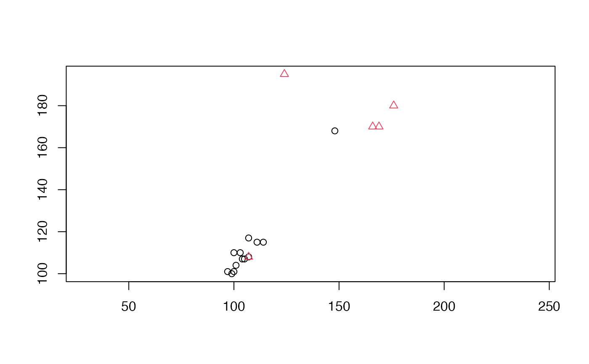

The function step_pd_raster() creates a specification of
a recipe step that will convert compatible data formats (numerical arrays,
including matrices, of 2, 3, or 4 dimensions) to 3-column matrix
representations of persistence diagram data. The input and output must be
list-columns.
A recipe object. The step will be added to the sequence of operations for this recipe.
One or more selector functions to choose variables for this step.
See selections() for more details.
For model terms created by this step, what analysis role should they be assigned? By default, the new columns created by this step from the original variables will be used as predictors in a model.
A logical to indicate if the quantities for preprocessing have been estimated.
The type of filtration from which to compute persistent
homology; currently only "cubical".
Parameters passed to persistence engines.
The computational engine to use (see 'Details'). Reasonable
defaults are chosen based on filtration.
A character string of the selected variable names. This field
is a placeholder and will be populated once prep() is used.
A logical to keep the original variables in the
output. Defaults to FALSE.
A logical. Should the step be skipped when the recipe is baked by
bake()? While all operations are baked when prep() is run, some
operations may not be able to be conducted on new data (e.g. processing the
outcome variable(s)). Care should be taken when using skip = TRUE as it
may affect the computations for subsequent operations.
A character string that is unique to this step to identify it.
An updated version of recipe with the new step added to the
sequence of any existing operations.
Persistent homology (PH) is a tool of algebraic topology to extract features from data whose persistence measures their robustness to scale. The computation relies on a sequence of maps between discrete topological spaces (usually a filtration comprising only inclusions) constructed from the data.
The PH of numeric arrays such as (greyscale) digital images is computed from the cubical filtration of the pixel or voxel array, treated as a function from a cubical mesh to a finite value range.
Cubical Ripser is an efficient implementation of cubical PH and is ported
to R through ripserr. It accepts numerical
arrays.
The value_max argument bounds the value range along which PH is computed.
Cubical Ripser is implemented using both of two methods, link-join and
compute-pairs, controlled by the method parameter.
This step has 1 tuning parameter(s):
max_hom_degree: Maximum Homological Degree (type: integer, default: NULL)
Other topological feature extraction via persistent homology:
step_pd_degree(),
step_pd_point_cloud()
topos <- data.frame(pix = I(list(volcano)))
ph_rec <- recipe(~ ., data = topos) %>%
step_pd_raster(pix)
ph_prep <- prep(ph_rec, training = topos)
ph_res <- bake(ph_prep, topos)
tidy(ph_rec, number = 1)
#> # A tibble: 1 × 3
#> terms value id
#> <chr> <dbl> <chr>
#> 1 pix NA pd_raster_CuKl5
tidy(ph_prep, number = 1)
#> # A tibble: 1 × 3
#> terms value id
#> <chr> <dbl> <chr>
#> 1 pix NA pd_raster_CuKl5
with(ph_res$pix_pd[[1]], plot(
x = birth, y = death, pch = dimension + 1, col = dimension + 1,
xlab = NA, ylab = "", asp = 1
))

with_max <- recipe(~ ., data = topos) %>%
step_pd_raster(pix, value_max = 150)
with_max <- prep(with_max, training = topos)
bake(with_max, topos)
#> # A tibble: 1 × 2
#> pix pix_pd
#> <list> <list>
#> 1 <dbl [87 × 61]> <PHom [14 × 3]>